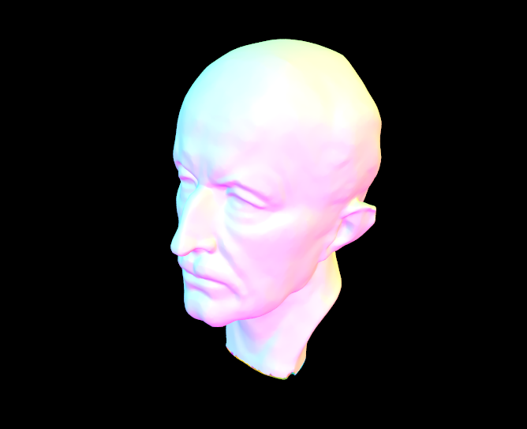
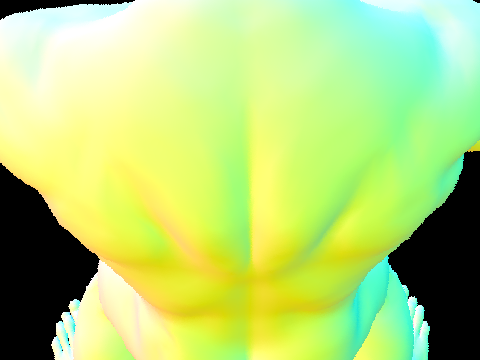
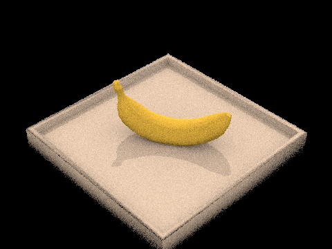
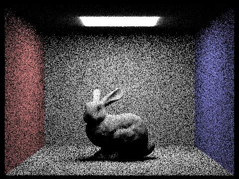
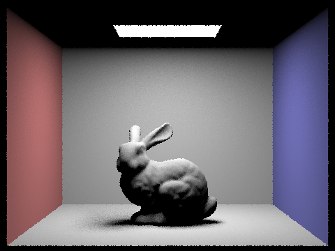
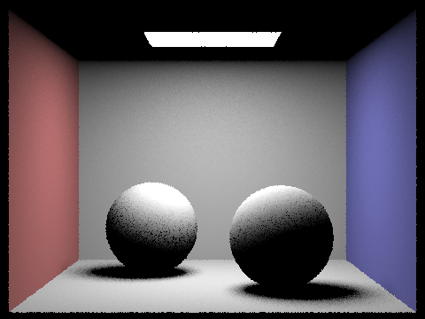
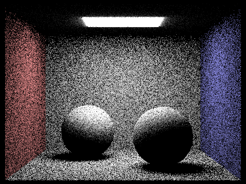

Overview
Overall, in this assignment, we were able to develop a raytracer and implement a global illumination algorithm. First, in Part 1, we generated rays and wrote methods to intersect our rays with scene objects. This allowed us to render objects by coloring them according to their surface normals and gave us experience with manipulating camera and world coordinates. In Part 2, we got experience with acceleration structures, implementing a bounding volume hierarchy, in which we sorted the scene objects into a tree such that we could efficiently ray trace. Rather than testing each ray against each object, we could test each ray against the tree, reducing computation of intersection to logarithmic rather than linear time per ray (in the number of scene objects). This is necessary for rendering complex scenes.
In Part 3, we handled direct illumination, in which we were able to test Monte Carlo integration methods of lighting. We wrote two methods, one that sampled over the hemisphere and one that sampled over the light source. With this exercise, we learned the importance of sampling the regions where you expect contributions, as lighting sampling proved much more robust than hemisphere lighting, particularly for small light sources. In Part 4, we handled indirect illumination, which is simply computed by sampling reflection of light and recursively computing direct illumination. Through this part, we understood how to perform a global light transport simulation and capture the effects of indirect lighting. We also implemented a Russian roulette algorithm. Finally, in Part 5, we sampled adaptively. This demonstrated the dramatic speedup (order of magnitude) that is possible by on-the-fly estimation of errors and terminating locally when error is small. Essentially, we used resources where they were most needed rather than treating the entire domain as equivalent. This assignment gave us a holistic understanding of ray tracing and illumination algorithms, including the relatively large amount of resources needed for rendering seemingly simple scenes.
Part 1: Ray Generation and Scene Intersection
Walk through the ray generation and primitive intersection parts of the rendering pipeline.
For each pixel, we generate $\texttt{ns_aa}$ number of rays to sample the scene. First, we use $\texttt{gridSampler->get_sample()}$ to get a random sample from $[0,1]\times[0,1]$ and add that to origin, the bottom left corner of the pixel. This point is in the image space. We then call $\texttt{camera->generate_ray()}$ to return a ray that goes from the camera in camera space to that point after it has been transformed from image space onto the sensor plane in camera space. After normalization, this becomes the direction for the ray (camera to sensor coordinate), while the origin is set to be the camera position.
We trace the trajectory of this ray into the world using $\texttt{est_radiance_global_illumination()}$ which returns the radiance at the point in the scene this ray intersects. We determine if the ray intersects with a primitive using $\texttt{bvh->intersect()}$. Within this function, we iterate through all the primitives, checking if the ray hits any and updating the intersection point if we find that the ray hits a primitive that is earlier in its trajectory than the previously-recorded closest intersection.
We trace the trajectory of this ray into the world using $\texttt{est_radiance_global_illumination()}$ which returns the radiance at the point in the scene this ray intersects. We determine if the ray intersects with a primitive using $\texttt{bvh->intersect()}$. Within this function, we iterate through all the primitives, checking if the ray hits any and updating the intersection point if we find that the ray hits a primitive that is earlier in its trajectory than the previously-recorded closest intersection.
After the closest intersection is found, $\texttt{est_radiance_global_illumination()}$ returns the radiance at this point. The radiance returned by each of the $\texttt{ns_aa}$ sample rays are totaled, then averaged, and we finally update the sample buffer with this value.
Explain the triangle intersection algorithm you implemented in your own words.
To implement triangle intersection, we first compute the plane intersection of the ray with the plane on which the triangle lies. We computed this plane by computing the triangle normal vector from the cross product of two of the vectors defined by the triangle’s edges. We first check if the ray is parallel to the plane (within a small tolerance) and exit if true. If the corresponding intersection point in the parameter t was outside of the range defined by the minimum and maximum, we exited with false. If it was within the permissible range, we then computed if the intersection point was within the triangle. To do so, we computed the barycentric coordinates of the point with respect to the triangle and checked if each of the coordinates was positive. We returned true only if we determined the intersection point with the plane to lie within the triangle. We computed the normal at the point by the barycentric average of the normals of each vertex.
Show images with normal shading for a few small .dae files.

|
|

|

|
Part 2: Bounding Volume Hierarchy
Walk through your BVH construction algorithm. Explain the heuristic you chose for picking the splitting point.
We construct the BVH using a recursive algorithm. Given the (sub) vector of primitives, we first create the bounding box that holds all the primitives. If the number of primitives is less than or equal to the max leaf size, we create a leaf node by assigning its start and end iterators to those passed in by the function call. Otherwise, we need to determine how to split the bounding box and partition the primitives using $\textt{findBestSplit()}$.
Our method to find the best split tests $\textt{BINS}-1$ number of uniformly spaced splits across the width of the bounding box, for each of the three axes. In practice, we found that $\textt{BINS}=8$, a total of 27 different split possibilities, was sufficient for speedup. For each axis, we first find the bounding width of all the centroids of the primitives. Then, we determine which of the $\textt{BINS}$ bins a primitive belongs to. Additionally, we compute the bounding box of all the primitives in each bin.
To evaluate the cost of each split we use the surface area heuristic (SAH). For each split, we count and determine the surface area of the bounding box of all primitives on each side. This is achieved in one pass through the bins since we collected the number of primitives in and the bounding box of each bin—we keep a running sum of the left side of the split and the right side as we iterate through each split. Then for each split, we calculate the cost of the split using the SAH and keep track of the minimum, as well as the corresponding axis and split position. Finally, we return the least cost split position, the splitting axis, and the number of primitives on the left of the split ($\textt{l_count}$).
We then must split our vector of primitives that was passed in. First we initialize the non-leaf node with the bounding box of all the primitives. We create the children using recursive calls to $\textt{construct_bvh()}$. Because the function takes in the $\textt{start}$ and $\textt{end}$ iterator of a subvector, we accomplish this split by re-sorting the subvector such that the primitives with a centroid to the left of the split are on the left of the subvector. Then, to call the function recursively to create the left child, we simply pass in start and $\textt{start} + \textt{l_count}$ for the start and end. We pass in $\textt{start} + \textt{l_count}$ and end for the right child.
Show images with normal shading for a few large .dae files that you can only render with BVH acceleration.
|

|

|
|

|
Compare rendering times on a few scenes with moderately complex geometries with and without BVH acceleration. Present your results in a one-paragraph analysis.
| teapot.dae | cow.dae | beetle.dae | peter.dae | beast.dae | |
|---|---|---|---|---|---|
| Number of Primitives | 2464 | 5856 | 7558 | 40018 | 64618 |
| Rendering w/o BVH | 9.1695 | 23.8812 | 31.2788 | N/A | N/A |
| Rendering w/o BVH | 9.1695 | 23.8812 | 31.2788 | N/A | N/A |
| Building BVH | 0.0050 | 0.0215 | 0.0182 | 0.1348 | 0.2451 |
| Rendering w/ BVH | 0.0631 | 0.0678 | 0.0662 | 0.0628 | 0.0585 (0.1014) |
We obtain these times using 480x360, 1 ray per pixel, 8 threads and at the default view point. We find that our BVH implementation reduces the rendering time by about 2 orders of magnitude when including the overhead of creating the BVH. We find that the rendering times are close to constant with respect to the number of primitives, but the time to construct the BVH scales linearly. For the large meshes, peter.dae and beast.dae, their reported render times are underestimated because their default views don’t take up the entire frame, causing most rays to miss entirely and the checks to terminate early. However, when focused on beast.dae’s back, the render time (reported in parentheses) is as expected.
Part 3: Direct Illumination
Walk through both implementations of the direct lighting function.
We wrote two sampling schemes to compute direct illumination. First, we did the naive method of sampling over the entire hemisphere with cosine weighting to account for Lambert’s law (hemisphere sampling). For each ray we sampled, we checked if its first intersection was with a light source. If so, we took the radiance of the light source from that point and multiplied by the cosine of the angle relative to the source due to Lambert’s law. We repeated this for the sample per light source rate (multiplied by the number of light sources).
The other method we used was lighting samling, in which we took sample rays only in the directions of the light sources in the scene. For point light sources, we use a single sample (since only a single point is needed), and for area light sources, we use a number of samples per source. Using the conversion of the integral from class, we then can average over the samples from each source. For each ray, we compute if it intersects an object before reaching the light source, and if it does, we say that ray provides no direct lighting. If it does not intersect any object, we then compute the contribution to the lighting. Our estimator is now changed, since we have to account for sampling only the area of the light source. The radiance and PDF information is provided by the sample_L() method inherent to the light source.
|

|
Show some images rendered with both implementations of the direct lighting function.
| Uniform Hemisphere Sampling | Light Sampling |
|---|---|
|

|

|
|

|

|